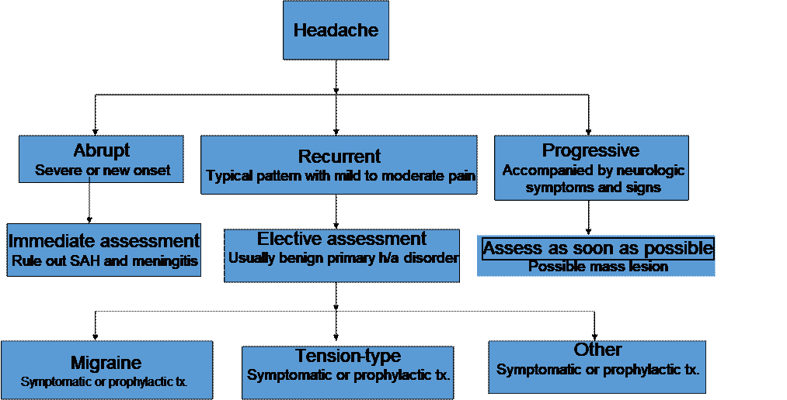

- Headache or Cephalalgia is pain anywhere in the region of the head and neck.
- The brain itself is not a pain-sensitive organ since it lacks pain receptors.
- HA pain - due to pain-sensitive structures located in the head and neck region.
| Pain-Sensitive | Pain-Insensitive |
|---|---|
| Cranial venous sinuses with afferent veins | Brain parenchyma |
| Arteries at base of brain and their major branches | Ependyma |
| Arteries of the dura | Choroid |
| Dura near base of brain and large arteries | Pia |
| Dural, Cranial and extracranial nerves | Arachnoid |
| All extracranial structures | Dura over convexity |
| Skull |
Primary
- Migraine
- Migraine without aura (common migraine)
- Migraine with aura (classic migraine)
- Cluster Headache (recurrent severe periorbital attacks)
- Tension-type headache (e.g., posterior neck muscle contraction)
Secondary HA
- Associated with vascular disorders:
- Subarachnoid hemorrhage (Emergency!)
- Temporal arteritis (risk of blindness)
- Venous thrombosis
- Intracranial hematoma (including epidural, subdural)
- Severe arterial hypertension
- Associated with nonvascular intracranial disorders:
- Infection (meningitis, abscess, sinusitis)
- Increased CSF pressure (intracranial mass lesion or hydrocephalus)
- Miscellaneous:
- Medication: side effect of nitroglycerin or withdrawal (analgesics)
- Psychological disorders
- Onset (Acute vs slowly progressive), frequency, duration (hours, days?), quality, intensity (worse ever?), location,
- Triggers (worse with exertion?, food? menstruation?) and ameliorating factors, associated symptoms (pulsatility, photophobia, phonophobia)
- Functional impairment (work, IADLs)
- Red flags (neurological symptoms, severity of disability) for serious disease to differentiate between the causes of headache.
- Select patients in need of immediate management based on red flags on history and physical signs. Clinical history, diagnostic imaging, laboratory findings
- Vitals, Level of consciousness, Head and neck, Neurological exam (especially visual, motor, reflex, sensory, speech, or cognitive). If positive finding, investigation is warranted.
- Identify patients that require referral/brain imaging:
- New/explosive onset
- Change in pattern
- Jaw claudication
- Limb girdle pain
- Worse with stooping over, straining, coughing
- Neurological signs on exam
- Temporal artery tenderness
- X-rays and other tests may also be used if sinusitis is suspected.
Diagnostic Alarm Signs for Serious Headache (Red Flags)
- Sudden onset
- Onset after 50 years
- Increased frequency and severity
- New onset in HIV or cancer patients
- Associated with systemic illness – hypertension, diabetes, neck aches, fever, rash
- Altered consciousness, focal neurologic deficit
- Papilledema
- Trauma
- Migraine without aura (common migraine)
- Migraine with aura: Aura are transient focal neurological symptoms that often precede or accompany the headache.
- Cluster Headache: Involves recurrent severe periorbital attacks.
- Tension-type headache: Involves posterior neck muscle contraction.
Migraine
Migraine is a common disabling primary headache disorder, ranked as the 3rd most common disorder worldwide. Characteristics include:
- Pulsatile
- Lasts 2-72 hours
- Incapacitating photophobia and phonophobia
Migraine ISH Diagnostic Criteria
- At least 6 attacks of headache with the following criteria:
Headache Characteristics:
- Headache lasting 4-72 hours.
- Must have 2 of the following:
- Unilateral
- Pulsating
- Moderate-severe intensity.
- Aggravated by physical activity
Associated Symptoms:
- Nausea
- Vomiting
- Photophobia
- Phonophobia
Migraine with Aura
- Aura:
- Visual aura is the most common. Subtypes:
- Photopsia - Flashes of white and/or black or rarely of multicolored lights
- Scintillating Scotoma - Dazzling zigzag lines. It could be tunnel vision, hemianopsia
- Auditory or olfactory hallucinations,
- Somatosensory - Paresthesia e.g. pins-and-needles can migrate up the arm → face, lips, and tongue (ipsilateral). Or temporary dysphasia, vertigo, and hypersensitivity to touch. Differential diagnosis: TIA
Epidemiology
- More common in individuals with family history.
- More common in women, especially women with a mother with migraine.
- Prevalence: 19% of women in the general population.
Common Migraine Triggers
- Food - Cheese and chocolates
- Alcohol/red wine
- Menstruation
- Stress and worry
- Lack of sleep/oversleep
- Fatigue
- Hunger
Pathophysiology of Migraine
- Vasodilation - no longer tenable
- Neurogenic - Cortical spreading depression activates the trigeminal and parasympathetic systems, which causes vasodilation and release of neuropeptides that cause inflammation.
- Serotonin 5-HT receptors modulate the release of neurogenic peptides.
Tension Type Headache
IHS Criteria
- Tension-type headaches occur < 15 times per month.
- Lasts from 30 minutes to 7 days.
- No nausea or vomiting.
- No photophobia and phonophobia (1 ok).
- Headache has at least 2 of the following criteria:
- Pressing/tightening
- Bilateral
- Mild-moderate
- Not aggravated by physical activity.
Cluster Headache
ISH Diagnostic Criteria
- Duration: 15 to 180 minutes if untreated.
- Characteristics: Severe periorbital, supraorbital, or temporal pain.
- Associated Symptoms:
- Conjunctival injection
- Lacrimation
- Nasal congestion
- Rhinorrhea
- Forehead and facial swelling
- Miosis
- Ptosis
- Eyelid edema
- Frequency: Between one every other day to 8/day.
Rebound Headaches
- Headache for 15 days/month with at least one of the following characteristics and 2, 3, and 4:
- Bilateral
- Pressing/tight non-pulsating quality
- Mild/moderate intensity
- Simple analgesic use >15 days a month for 3 months.
- Headache has increased during analgesic use.
- Headache resolves or reverts to previous pattern within 2 months after discontinuation of analgesia.
- Intracranial hemorrhage
- Subdural hemorrhage
- Subarachnoid hemorrhage
- Meningitis
- Hypertensive encephalopathy
Subarachnoid Hemorrhage (SAH)
- Extravasated blood in the subarachnoid space. The blood activates meningeal nociceptors, leading to diffuse occipital pain along with signs of meningismus.
- Severe and sudden headache
- SAH accounts for up to 10% of all strokes and is the most common cause of sudden death from a stroke.
- Of the hemorrhagic strokes, half are due to a subarachnoid hemorrhage and half due to intracerebral hemorrhage.
- Intracerebral hemorrhage is associated with HTN and AVM.
Risk Factors for SAH
- Estimated that 5% of the population have a berry aneurysm.
- HTN
- Smoking and alcohol
- Sympathomimetic drugs
- Polycystic kidney disease
- Coarctation of the aorta
- Marfan's syndrome
Hypertensive Encephalopathy
- Associated with high blood pressure, nausea, vomiting, and blurred vision.
- Usually associated with blood pressures of 200/130.
- Headache is diffuse and worse in the morning, subsiding during the day.
Bacterial Meningitis
- Fever and severe headaches
- Neck pain and stiffness (+Kernig's sign)
- Altered level of consciousness
- The absence of fever, neck stiffness, and altered mental status in a patient with a headache virtually eliminates the diagnosis of meningitis.
- In multiple studies, the presence of neck stiffness on examination has a pooled sensitivity of 70%.

Management of Headache
×

Management of Headache
Clinical, Diagnostic Imaging, Laboratory Findings
- Lumbar puncture if subarachnoid hemorrhage, encephalitis, high- or low-pressure headache symptoms, or meningitis is suspected.
- Laboratory tests (on an individual basis)
- ESR for suspected temporal arteritis
- Endocrine, biochemical, infection work-up
- Search for malignancy if indicated
- Facial pain may need a thorough assessment by a dental specialist familiar with headaches and facial pain and/or an ENT specialist if sinus or other ENT disorders are suspected.
- Symptomatic treatment- Analgesics:
- Ibuprofen, naproxen, and ASA or acetaminophen with or without codeine and/or butalbital, are used for mild to moderate h/a pain.
- Non-opioid meds should be used less than 15 days per month (to prevent rebound h/a).
- Medication over-use h/a can result from overuse of analgesics/rebound/dependency, which limits their long-term potential.
- Ergot derivatives:
- Ergotamine acts on serotonin receptors and is classically used for migraines and cluster h/a but use is limited by side effects. They may cause rebound h/a if used 10 days per month or more.
- Triptans:
- They act on the serotonin (HT-5) subclass 1B and 1D receptor, on extracerebral blood vessels and neurons, and the mechanism of action is prevention of neurologically sterile inflammatory responses around vessels and vasoconstriction.
- They are contraindicated in patients with cardiac disorders, sustained hypertension, basilar and hemiplegic migraine.
- Other classes of drugs:
- Corticosteroids can be useful in many h/a disorders, including status migraine, cluster h/a, and cerebral neoplasms with edema (especially metastatic lesions, temporal arteritis).
- Other drugs include metoclopramide (maxeran), phenothiazines, Ketorolac, meperidine, indomethacin, dimenhydrinate, and domperidone.
Indication for Migraine Prophylaxis
- Interferes with patient's daily routine/QOL.
- >2 attacks/month
- Acute medications ineffective or contraindicated.
- Presence of uncommon migraine conditions:
- Hemiplegic migraine
- Basilar migraine
- Migraine with prolonged aura.
- Beta blockers
- Tricyclics
- Calcium channel blockers
- AED-valproate, topiramate, and gabapentin
- Methylsergide
Patient Education and Counseling for Management of Benign Headache Syndrome:
- A calendar or diary of headaches is useful for follow-up assessment.
- A record of medications (usefulness, dosage, side effects) should be kept.
- Reassurance and explanation are most important to the patient in the long term.
- Always offer hope to the patient with chronic headaches even if no cure is available; most primary headaches can be controlled.
- For tension headaches, attempt to modify or eliminate the stressor with behavior modification, biofeedback, relaxation therapy, yoga, exercise, and so on.
Send your comments, corrections, explanations/clarifications and requests/suggestions